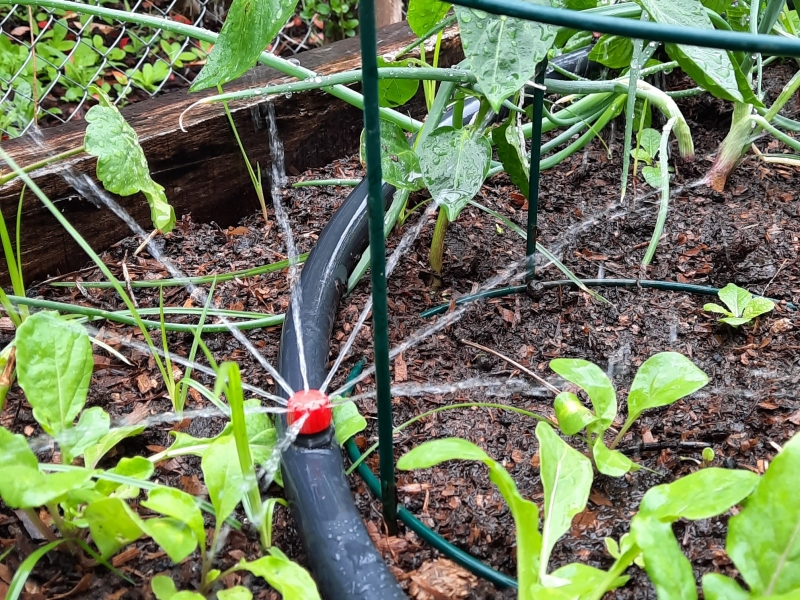

El agua es un recurso fundamental para el ser humano, así como para el resto de animales y seres vivos. Dentro de las actividades agropecuarias, se requiere de un aprovechamiento óptimo debido a su limitada disponibilidad en varias partes del país. Un adecuado sistema de riego, aporta la cantidad necesaria de agua en el momento que se necesita, humedeciendo el suelo hasta la profundidad que requiera el cultivo.
Tipos de Sistemas de Riego
Riego por Aspersión
El riego por aspersión se realiza por medio de unos aspersores repartidos por el terreno y zona a regar. Este tipo de riego deja la tierra de la zona humedecida y, en función de la cantidad de agua que se use para regar, se puede conseguir que la tierra quede más o menos mojada. Este tipo de riego se utiliza mucho para jardines donde hay una gran cobertura de césped y plantas, promoviendo que el agua llegue a todas partes.
Riego por Goteo y Microaspersión
El riego por goteo y la microaspersión se caracterizan por ser una fuente eficiente de ahorro de agua, el cual consiste en suministrar la cantidad necesaria para cada planta por medio de un sistema de mangueras con emisores. Se recomienda para cultivos como huertas, agricultura orgánica y jardinería entre otros.
